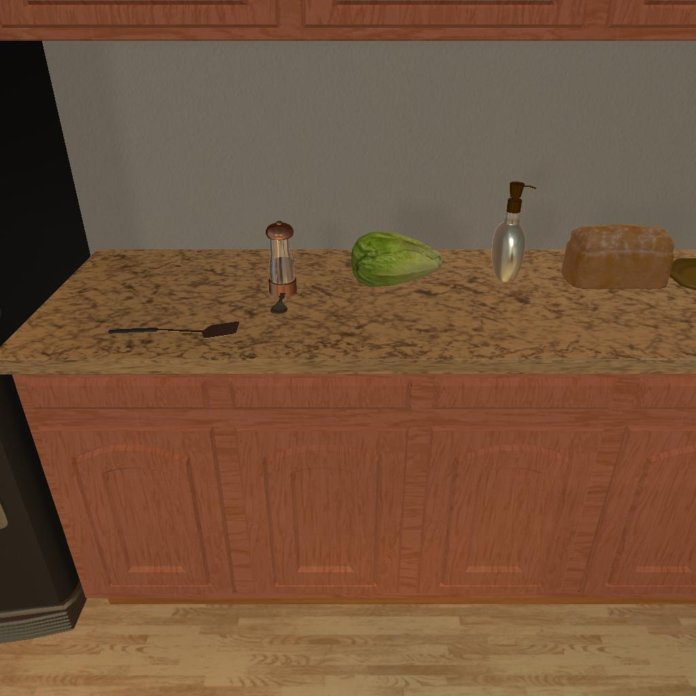

---------------------------------------------------------task: 23---------------------------------------------------------
--------------------------------------------------------------------------------------------------------------------------------------------------------------------
--------------------------------------------------------------------------------------------------------------------------------------------------------------------
Step:--------------------------------------------------------------------------7-------------------------------------------------------------------------------
----------------------------------------
VLM Prompt:
**Task**
Please perform as an embodied AI agent. Our final objective is to heat some mug and put it in coffeemachine. Below is the plan for completing the task, the current observation, alongside historical data and admissible actions for the next step. Please determine the best action for the next step!
**Plan**
Below is a detailed step-by-step plan to complete the task.
1. Find a mug.
2. Pick up the mug.
3. Find a microwave.
4. Heat the mug with the microwave.
5. Find a coffee machine.
6. Place the heated mug in the coffee machine.
**Current Observation**
Displayed is an image capturing the current position of the agent.
**History Information**
Displayed are the previous observations with their corresponding actions.
State 0:
No history.
State 1:
1. Step Index in the Plan: 1
2. Objects: Coffee Machine, Countertop, Sink, Part of a Window
3. Action: go to cabinet 1
State 2:
1. Step Index in the Plan: 1
2. Objects: Wooden Cabinet Door
3. Action: open cabinet 1
State 3:
1. Step Index in the Plan: 1
2. Objects: Opened Cabinet (cabinet 1)
3. Action: go to cabinet 3
State 4:
1. Step Index in the Plan: 1
2. Objects: Open Cabinet Door
3. Action: open cabinet 3
State 5:
1. Step Index in the Plan: 1
2. Objects: Cabinet Interior (empty cabinet 3)
3. Action: go to cabinet 4
State 6:
1. Step Index in the Plan: 1
2. Objects: Countertop, Pepper Mill, Green Vegetable, Small Unidentifiable Items
3. Action: go to cabinet 5
State 7:
2. Step Index in the Plan: 1
3. Objects: Countertop, Pepper Mill, Green Vegetable, Unidentifiable Items
4. Action: go to cabinet 6
**Admissible Actions**
(1): go to cabinet 1
(2): go to cabinet 2
(3): go to cabinet 3
(4): go to fridge 1
(5): go to countertop 1
(6): go to cabinet 7
(7): go to drawer 1
(8): go to drawer 2
(9): go to cabinet 8
(10): go to drawer 3
(11): go to cabinet 9
(12): go to cabinet 10
(13): go to drawer 4
(14): go to microwave 1
(15): go to cabinet 11
(16): go to toaster 1
(17): go to cabinet 12
(18): go to cabinet 13
(19): go to cabinet 14
(20): go to cabinet 15
(21): go to countertop 2
(22): go to coffeemachine 1
(23): go to garbagecan 1
(24): go to countertop 3
(25): go to countertop 4
(26): go to sink 1
(27): go to stoveburner 1
(28): go to stoveburner 2
(29): go to stoveburner 3
(30): go to sinkbasin 1
(31): open cabinet 6
(32): close cabinet 6
**Analysis Guideline**
1. Analyze the history and current observation, and then determine our current step in the plan and our current place.
2. List all visible objects related to the task in the current observation, without summarizing any as "various items."
3. Analyze the objects in the current observation based on the history and the requirements for the current step, and then determine if we can complete the step with the current observation.
4. Analyze and decide on the most appropriate action to take.
5. Summarize the analysis using the following format: "Analysis: [The summarization of the analysis], The Most Appropriate Action: (i which is the integer.): [Selected action]"
**Notes**
1. We must complete each step of the plan in order and cannot skip steps when the previous ones are not finished.
2. For "Go to" actions listed as "go to xxx [n]", interpret this as there are n distinct actions available: "go to xxx 1", "go to xxx 2", ..., "go to xxx n". Select one specific action from these options instead of using "go to xxx [n]".
3. If receptacles such as drawers, cabinets, and so forth are closed in the current observation, we may try to open them.
4. Pay attention to synonyms and ensure clarity in the terms used.
5. We must determine and provide the single action which must be in the **Admissible Actions**.
6. If there is no history available, we are at the first step and the current place is "Unknown".
**Answer**
Please select the most suitable action by following the **Analysis Guideline**, keeping the above **Notes** in mind.
----------------------------------------
----------------------------------------
VLM Response:
Analysis: The current step in the plan is to find a mug, which is step 1. Based on the historical data, the agent has already attempted to find a mug by checking various cabinets but has not yet found one. The current observation shows the agent is facing a countertop with a pepper mill, a green vegetable (possibly lettuce or cabbage), and some small unidentifiable items; there is no mug visible on the countertop. Since the mug has not been found on the visible countertop or in the previously opened cabinets, the agent should attempt to find the mug by exploring other storage areas that have not been checked yet.
Visible objects in the current observation related to the task include:
- Pepper Mill
- Green Vegetable
- Small Unidentifiable Items
None of these objects are a mug or are likely to help in completing the current step of finding a mug.
Considering the agent should continue searching for a mug in the unopened storage areas, and based on the admissible actions, the most appropriate next action is to go to another cabinet that has not been opened yet.
The Most Appropriate Action: (6): go to cabinet 7
----------------------------------------
----------------------------------------
>>> Refine VLM Response and Get Pure Action: go to cabinet 7
----------------------------------------
-----------------------------------------------------------------
Running time: 19.409160137176514 seconds
Total Money: 0
-----------------------------------------------------------------
-----------------------------------------------------------------
Summarization Prompt:
**Context**
Analysis: Since there is no history information, we are at the first step in the plan, which is to find a statue. The current place is unknown. In the current observation, we see a floorlamp next to an armchair with a small table that has a small object on it, which could potentially be the statue we are looking for. Since the plan requires us to find a statue first and it appears there might be one on the table next to the armchair, we should investigate this object to determine if it is the statue we need.
The Most Appropriate Action: (1): go to armchair 1
**Summary**
1. Step Index in the Plan: 1
2. Objects: Floorlamp, Armchair, Small Table, Small Object (potential statue)
3. Action: go to armchair 1
**Context**
Analysis: The current step in the plan is to find a mug, which is step 1. Based on the historical data, the agent has already attempted to find a mug by checking various cabinets but has not yet found one. The current observation shows the agent is facing a countertop with a pepper mill, a green vegetable (possibly lettuce or cabbage), and some small unidentifiable items; there is no mug visible on the countertop. Since the mug has not been found on the visible countertop or in the previously opened cabinets, the agent should attempt to find the mug by exploring other storage areas that have not been checked yet.
Visible objects in the current observation related to the task include:
- Pepper Mill
- Green Vegetable
- Small Unidentifiable Items
None of these objects are a mug or are likely to help in completing the current step of finding a mug.
Considering the agent should continue searching for a mug in the unopened storage areas, and based on the admissible actions, the most appropriate next action is to go to another cabinet that has not been opened yet.
The Most Appropriate Action: (6): go to cabinet 7
Please summarize the context by following above examples when providing the summary, and ensure that only the summary is included, without any extra explanation.
**Summary**
-----------------------------------------------------------------
-----------------------------------------------------------------
Summarization Response:
1. Step Index in the Plan: 1
2. Objects: Pepper Mill, Green Vegetable, Small Unidentifiable Items
3. Action: go to cabinet 7
-----------------------------------------------------------------
-----------------------------------------------------------------
Text Observation:You arrive at loc 8. The cabinet 7 is closed.
-----------------------------------------------------------------
UNSUCCEED